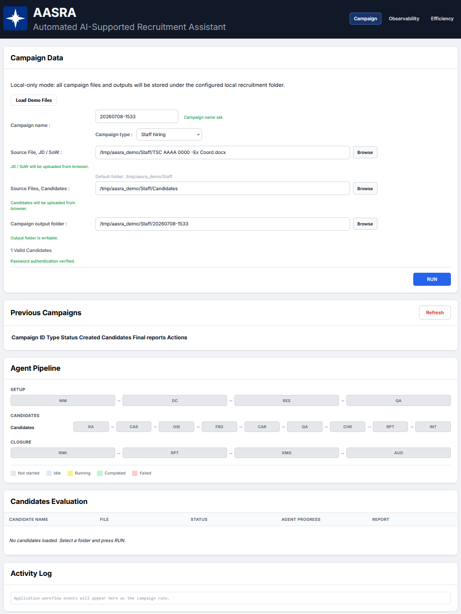
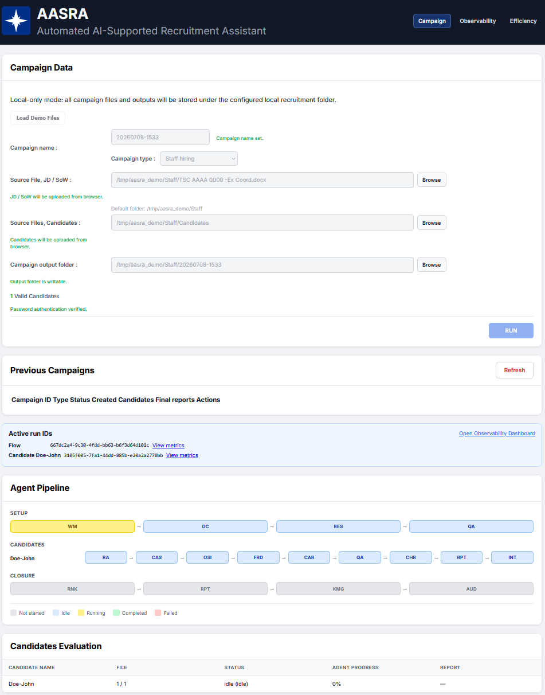
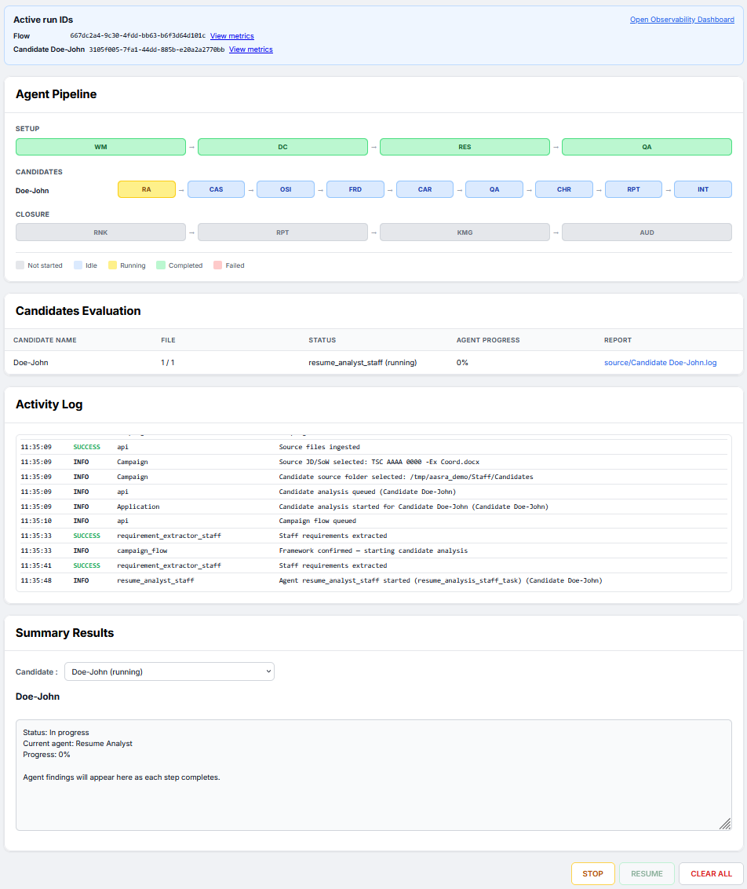
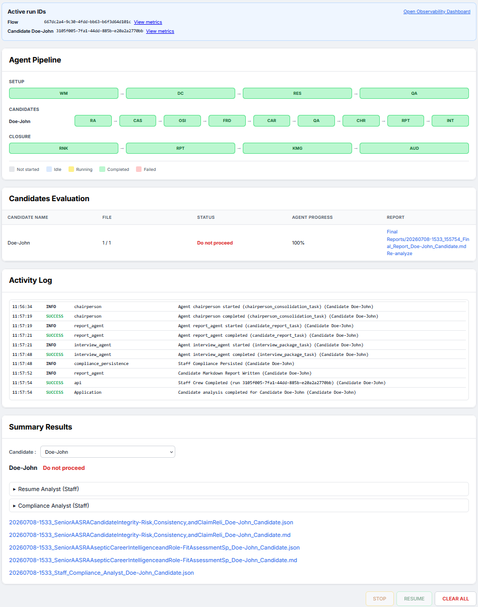
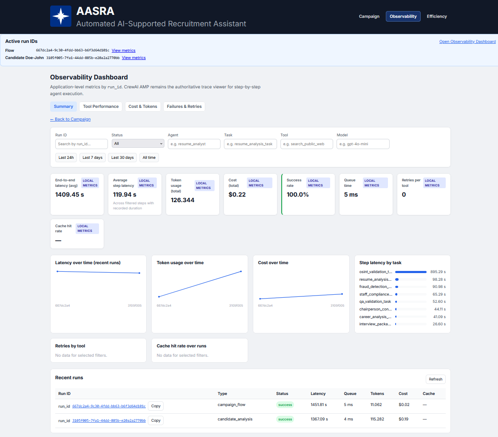
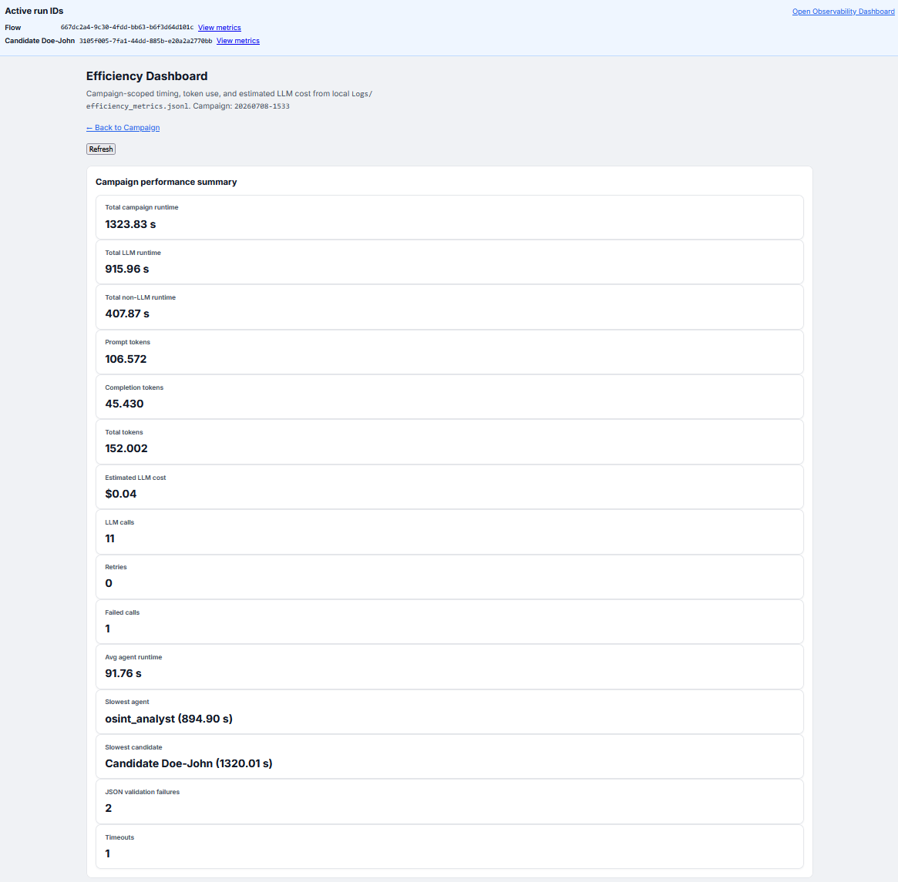
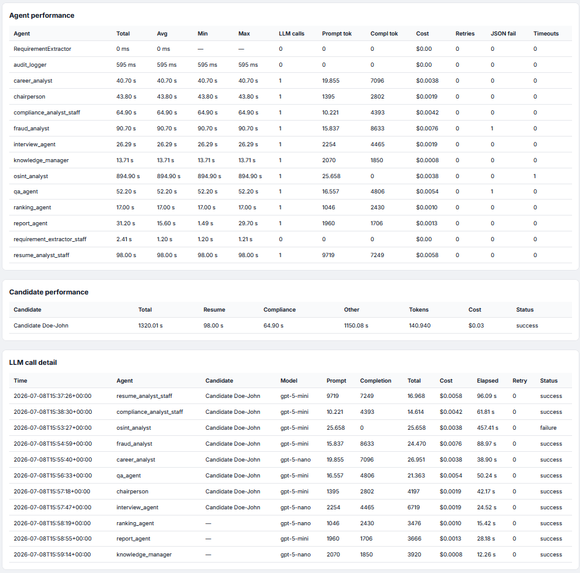

AASRA — AI-Supported Recruitment Assistant
June 2026 CrewAI Flow 17 agents FastAPI React 19 Render + Vercel
AASRA automates evidence-based recruitment campaigns for staff hiring and contractor selection: a 17-agent CrewAI pipeline ingests documents, extracts requirements, assesses compliance, validates claims via OSINT, flags integrity risks, ranks candidates, and produces board-ready reports — with human-in-the-loop gates and full audit traceability.

Problem & Target Users
Large organizations running staff vacancies and contractor procurements face document-heavy selection processes: job descriptions, statements of work, resumes, compliance matrices, and supporting evidence must be reviewed consistently, defensibly, and under audit pressure.
AASRA targets recruitment board chairs, HR evaluators, and recruitment operations staff who need more than generic AI summaries — they need structured C/PC/NC compliance tables, OSINT validation, integrity-risk indicators, deterministic contractor scoring, and ranked shortlists that humans can trust and defend.
Solution Overview
AASRA orchestrates a full recruitment campaign lifecycle through a CrewAI Flow (CampaignFlow): documents are classified and ingested, requirements or scoring matrices are extracted and QA-validated, a human board confirms the framework, then each candidate runs through a sequential specialist pipeline ending in chairperson consolidation, reports, and interview packages. Campaign closure produces deterministic rankings, a synthesis report, organizational knowledge persistence, and an immutable audit export.
A React dashboard gives operators real-time visibility via SSE — campaign setup, a live 17-agent pipeline diagram, candidate tables, activity logs, report modals, and dedicated observability and efficiency views. The system separates LLM narrative work from deterministic compliance and scoring rules so official points and pass/fail outcomes are never silently overridden by model judgment.
Key Features
- Dual campaign modes — Staff selection (JD → RequirementList) and contractor selection (SoW → ScoringMatrix) with automatic routing
- Document intake pipeline — Classify, deduplicate, OCR-flag, and structure DOC/DOCX/PDF artifacts before analysis
- Structured compliance assessment — Staff: flat StaffComplianceResult with C/PC/NC per requirement; Contractor: deterministic matrix scoring with LLM-only narrative support
- OSINT claim validation — Public-source research with identity anchors, confidence scoring, and policy-governed source catalog
- Integrity-risk analysis — Fraud analyst flags timeline gaps, unsupported claims, and contradictions without alleging fraud
- Career intelligence & ranking — Aseptic career analysis plus deterministic cross-candidate ranking with tie-break rules
- Human-in-the-loop framework gate — Board/evaluator confirms extracted requirements or scoring matrix before candidate processing
- Live agent pipeline UI — React dashboard with SSE-driven progress, per-candidate agent diagram, activity logs, and report modals
- Observability & cost tracking — Token usage, run steps, failures/retries, and CrewAI AMP tracing integration
Multi-agent AI Crew
AASRA implements a 17-agent catalog orchestrated by CrewAI Flow: classify → extract framework → HITL confirm → per-candidate analysis → rank → campaign reports → knowledge persistence → audit finalization.
| Agent | Role | Tools / Integrations | Trigger |
|---|---|---|---|
| Workflow Manager | Campaign queue, routing, spend alerts | Workflow queue, SSE events | Campaign start / flow kickoff |
| Document Classifier | Ingest, classify, deduplicate documents | File store, OCR flags | After campaign init |
| Requirement Extractor (Staff) | Extract JD requirements into RequirementList | LLM + structured output | Staff campaign route |
| Requirement Extractor (Contractor) | Extract SoW scoring matrix | LLM + structured output | Contractor campaign route |
| QA Agent | Schema validation, evidence integrity gates | Deterministic recomputation | Framework + per-candidate pre-consolidation |
| Resume Analyst | Evidence-linked candidate profile | LLM + OCR text | Per candidate |
| Compliance Analyst (Staff) | C/PC/NC assessment per requirement | LLM + evidence map | After resume analysis |
| Compliance Analyst (Contractor) | Matrix scoring via rule engine | Deterministic scorer + LLM narrative | After resume analysis |
| OSINT Analyst | Public-source claim validation | Serper, fetch_public_source, policy catalog | After compliance |
| Fraud Analyst | Integrity-risk indicators | Prior agent outputs | After OSINT |
| Career Analyst | Retrospective + prospective career intelligence | LLM structured output | After fraud |
| Chairperson | Post-QA consolidation & board recommendation | QA-validated artifacts | After QA |
| Report Agent | Board-ready candidate & campaign reports | Markdown export | After chairperson / closure |
| Interview Agent | Tailored interview packages & rubrics | Requirement links, evidence gaps | Post-QA |
| Ranking Agent | Deterministic cross-candidate ordering | Tie-break rules, compliance scores | Campaign closure |
| Knowledge Manager | Campaign-scoped organizational memory | SQLite persistence | Post campaign report |
| Audit Logger | Immutable provenance & audit export | Append-only audit trail | Campaign finalization |
Technical Architecture
- Frontend — React 19, Vite 6, TypeScript; campaign setup, candidate table, agent pipeline diagram, observability and efficiency pages
- Backend — FastAPI, Uvicorn, CrewAI (
@CrewBase+CampaignFlow) - Data / storage — SQLite index + local filesystem (
AASRA_RECRUITMENT_ROOT); cloud demo uses ephemeral/datawith synthetic pilot fixtures - Integrations — OpenAI LLMs, Serper (OSINT search), SSE event bus, CrewAI AMP tracing, GitHub Actions CI
Deployment
Local: Docker Compose (.\scripts\start-aasra-local.ps1) or native dev (uv run run_api + npm run dev) → http://localhost:5173
Cloud demo: Render (FastAPI backend, Docker) + Vercel (static React UI). CI runs backend pytest, frontend build, and Docker image builds on every push to main.
Cloud deployments use synthetic demo data only — no live recruitment PII.
Screenshots
Agent Pipeline — Live 17-agent Setup → Candidates → Closure diagram with per-step status.

Campaign Setup — Staff/contractor campaign configuration with local folder paths and validation.

Observability Dashboard — Latency, success rate, token cost, and run-level metrics with CrewAI AMP integration.

Efficiency View — Campaign efficiency analytics for operator review.

Efficiency Dashboard - Overall campaign statistics.

Efficiency Dashboard - Agent's view, includes details for agents and candidates. Please note that the OSINT agent did not find any worthy results and failed, but still spent 0.38 cents of a dollar to run. The most expensive agent for this campaign was the fraud analyst, that spent 0.76 cents of a dollar. All in all, running the hiring campaign took $3 cents for the candidate evaluation, and $1 cent for the campaign setup (workflow management, document classifier, requirement extractor, quality analysis) and closure (ranking of candidates, report generation, knowledge management and audit).

My Role & Learnings as Agentic Architect
- Designed a 17-agent recruitment catalog with strict role boundaries — extraction agents never score, compliance agents never rank, and the ranking agent never overrides deterministic rule-engine results.
- Orchestrated end-to-end campaign lifecycle with CrewAI Flow (
CampaignFlow), combining YAML-defined agents/tasks, Pydantic structured outputs, guardrails, and API-driven human-in-the-loop gates. - Separated LLM-assisted narrative from deterministic procurement scoring — official contractor matrix points come only from the rule engine, with the LLM limited to evidence summaries and reviewer attention points.
- Built a full-stack operator experience: SSE real-time progress, per-candidate agent pipeline visualization, observability metrics, and board-ready markdown report export with audit traceability.
- Shipped production-minded CI/CD — GitHub Actions for tests and builds, Docker local/cloud parity, Render + Vercel deployment guides, and cloud demo security constraints (synthetic data only).